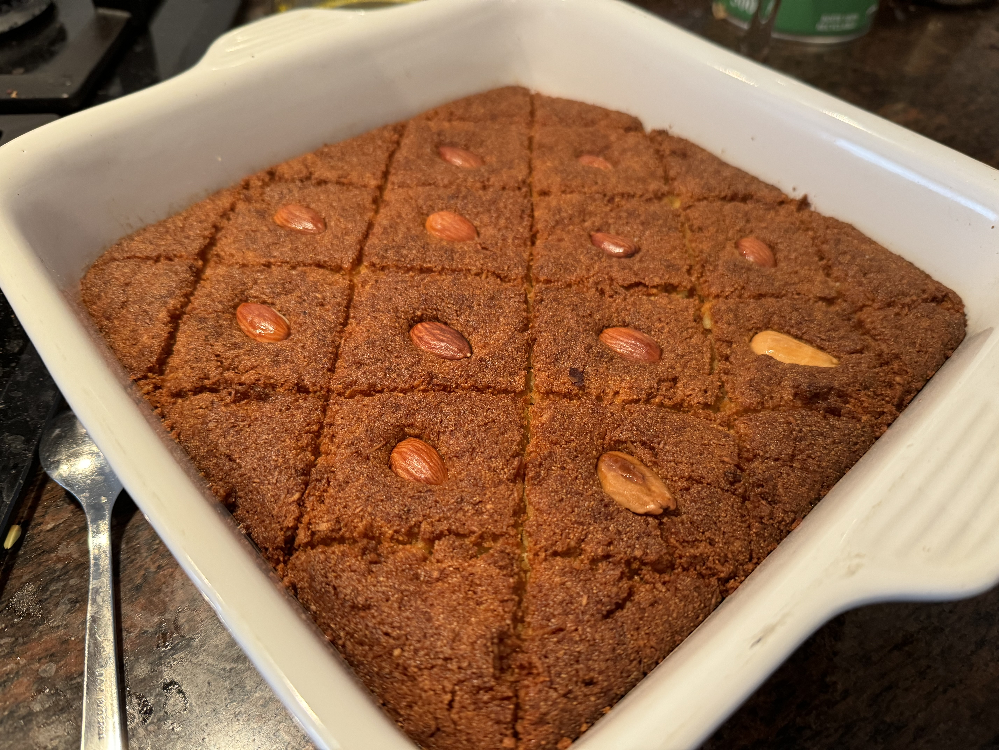

Basboussa
Ingredients
×
- 2 tasses de semoule
- 1 tasse de coco râpée
- 0.33 tasse de sucre
- 1 tasse de yaourt
- 1 c. à c. de bicarbonate
- 1 c. à c. de levure chimique
- moule de 20cm x 20cm
- amandes ou pistaches
- 2 tasses de sucre pour le sirop
- 1.75 tasse d'eau
- 1 c. à s. de citron
- 1 c. à s. de fleur d'oranger
- 1 c. à s. d'eau de rose

Préparation
Étape 1
Mélanger 2 tasses de semoule (1 de fine, 1 de couscous), 1 tasse de coco râpée, 0.33 tasse de sucre, 1 tasse de yaourt, 1 c. à c. de bicarbonate et 1 c. à c. de levure chimique.
Étape 2
Verser dans un moule de 20cm x 20cm. Disposer des amandes ou pistaches et couper en losanges avant de mettre au four.
Étape 3
Enfourner à 200ºC pendant 30min. Couvrir si ça brunit trop vite.
Étape 4
Faire un sirop : porter à ébullition 2 tasses de sucre pour le sirop, 1.75 tasse d'eau, 1 c. à s. de citron, 1 c. à s. de fleur d'oranger et 1 c. à s. d'eau de rose.
Étape 5
Verser le sirop sur le gâteau chaud.
Étape 6
Laisser reposer 24h sous film avant de manger.
Notes
- Nutriscore : F.